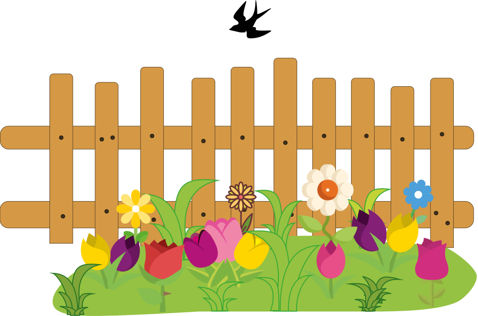

Eng
Eng
Диво посеред дня
На гарній бабусиній клумбі прямо біля високого паркану жили квіти. Різноманітні півонії, хризантеми, тюльпани поряд із різнобарвними трояндами та багатьма іншими красунями. Доглянуті, пізньою весною вони квітли всіма барвами, переливалися кольорами найкрасивішої веселки та пахли духмяним ароматом багатогранних парфумів.
Під стріхою бабусиної хати жила ластівка. Вона вже звила гніздо та літала заклопотана своїми справами. Лише зрідка сідала на паркан, щоб перекинутися із квітами привітливими словами. І одного дня вона помітила, що жителі клумби стали похмурими.
- Доброго дня, квітучі друзі. Чому похмурі? - спитала ластівка.
- Ти не зрозумієш нас. Ти літаєш так високо, і так далеко, що можеш бачити і блакитне озеро, і зелений ліс, та навіть верхівки засніжених гір. А ми лишень бачимо цей паркан. Біля нас немає нічого цікавого, - не весело відповіли півонії.
- Друзі мої, не засмучуйтесь навіть біля вас може статися чарівне диво. Я підбадьорю вас. Одного дня я покажу справжній зорепад.
- Зорепаду не буває в день, - здивовано відповіли троянди.
Ластівка лишень посміхнулася і полетіла далі.
Із тієї розмови пройшло лишень кілька днів і ластівка підлетіла до клумби.
- Пам'ятаєте я обіцяла вам диво? - промовила пташка, - Так подивіться ж на небо!
Квіти були здивовані та підняли бутони до гори, щоб глянути на блакитне небо.
В цей момент пішов легкий літній дощик. Сонце світило дуже яскраво і підсвічувало кожну краплину яскравим промінчиком. Здавалося, що краплинки перетворилися в сліпучі діаманти й сапфіри. Вони переливалися і повільно падали. Складалося враження справжнього зорепаду посеред дня.
Квіти були дуже вражені:
- Оце так диво!
- Красу можна знайти будь-де. Треба лишень придивитися.
Квіти посміхнулися і подякували своїй подрузі.
Харків, 27.02.2024